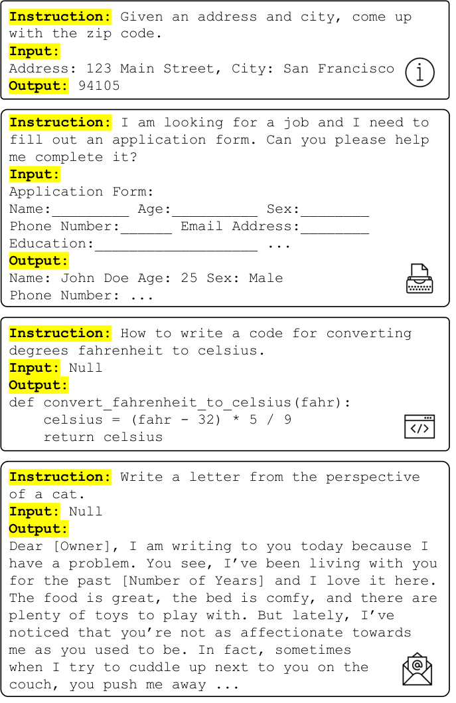
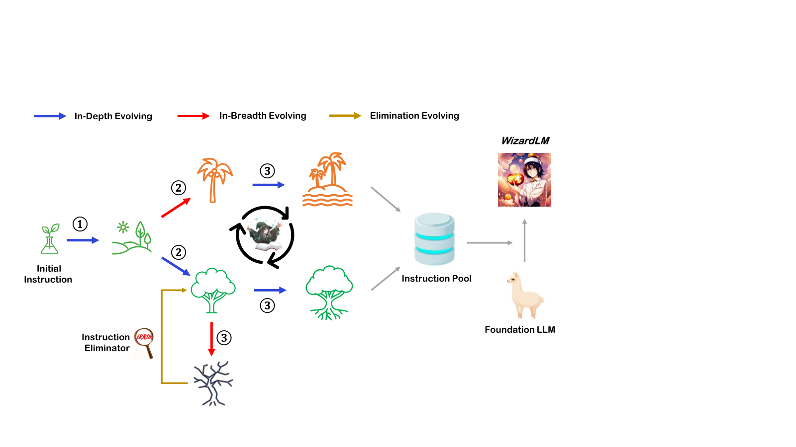

第 8 章 · 指令数据构建
指令数据是 SFT 的燃料，也是几乎所有后训练工作的起点。本章覆盖完整链路：数据结构、人工标注全流程、Self-Instruct / Evol-Instruct / Magpie 三大合成范式、textbook 质量思想、多样性与难度控制、中英文差异、质量过滤流水线，并给出可直接运行的生成-过滤脚本。
1. 指令数据的结构：从三元组到多轮对话
指令数据描述的是"用户给模型一个任务，模型给出回答"这件事，主流表示有两代。第一代是 Alpaca 三元组：instruction（做什么）、input（可选的附加材料，如待翻译的原文、待总结的文档）、output（期望回答）。它的优点是字段语义清晰，缺点是表达不了多轮与角色。第二代是 messages 多轮格式：一个 messages 数组按顺序排列 system / user / assistant 角色，Tulu 3、OpenHermes、UltraChat 等现代数据集全部采用它，并已成为训练框架的事实标准。
from transformers import AutoTokenizer
# 1) Alpaca 三元组格式：instruction + 可选 input + output
alpaca_style = {
"instruction": "把下面这句话翻译成英文。",
"input": "今天天气真好，我们去公园散步吧。",
"output": "The weather is really nice today. Let's go for a walk in the park.",
}
# 2) messages 多轮格式：现代 SFT 数据的事实标准
messages = [
{"role": "system", "content": "你是一个严谨的中文助手。"},
{"role": "user", "content": "解释什么是过拟合。"},
{"role": "assistant", "content": "过拟合指模型在训练集上表现很好，"
"但在未见过的数据上泛化变差……"},
{"role": "user", "content": "有哪些常用的缓解手段？"},
{"role": "assistant", "content": "最常用的是增加数据量、正则化、"
"早停和 Dropout……"},
]
# 3) 应用对话模板：把 messages 变成真正的训练文本（详见第 15 章）
tok = AutoTokenizer.from_pretrained("Qwen/Qwen2.5-1.5B-Instruct")
text = tok.apply_chat_template(messages, tokenize=False)
print(text) # 特殊 token 由模板负责，数据里千万不要手工拼接| 格式 | 字段 | 代表数据集 | 适用与局限 |
|---|---|---|---|
| Alpaca 三元组 | instruction / input / output | Alpaca、evol_instruct_70k | 单轮任务清晰；表达不了多轮、系统提示与角色 |
| messages 多轮 | role / content 数组 | Tulu 3 mix、UltraChat、OASST1 | 通用、可含工具调用；需配合对话模板使用（第 15 章） |
| 带权重的多轮 | messages + 可选 mask/weight 字段 | 自建数据常见 | 可只对 assistant 回答计损失；注意与训练框架字段对齐 |
Self-Instruct 的设计里，instruction 是"任务模板"，input 是"实例材料"。分开的好处是同一指令可以配多个实例，天然增加数据多样性；坏处是训练时必须把两者按模板拼回一句提示词，拼接方式要与推理时的用法一致。拿到任何三元组数据，先确认它的拼接约定（有的数据集约定 input 为空字符串，有的用占位符），拼错了 SFT 就是在学错误格式。
本节小结：新项目直接用 messages 多轮格式，历史三元组数据要明确拼接约定后再入库，特殊 token 一律交给对话模板处理。
2. 人类标注全流程：规范、指南、质检与一致性
在谈合成之前，先看人类标注的完整流程——因为所有合成范式的质量标准，最终都来自人类标注建立的"金标准"。一个可审计的人工标注项目分六步。
2.1 规范制定与试点
先写任务定义：这条数据要教模型什么行为？"好的回答"由谁定义？然后取 100~200 条试点样本，让 2~3 名标注员独立标注并逐条对齐分歧，把争议案例写进标注指南。跳过试点直接大规模标注的项目，几乎都会在 halfway 发现口径漂移而返工。
2.2 标注指南
指南的核心不是"什么是好"，而是"如何裁决两个都不错的回答"。它应包含：维度定义（有用、真实、完整、格式）、优先级规则（当有用与无害冲突时怎么办）、边界案例库（至少 30 个真实争议例与裁决）、格式硬约束（长度、Markdown、语言）。第 9 章的偏好标注指南是本节的进阶版。
2.3 质检与一致性
每条样本至少 2 人独立标注，分歧进仲裁（资深标注员或专家裁决），仲裁结果再回写指南。量化指标用标注者间一致性（Inter-Annotator Agreement, IAA），分类任务的标准度量是 Cohen's kappa 系数——它校正了"瞎猜也会撞上的一致"：
\[ \kappa = \frac{p_o - p_e}{1 - p_e} \]其中 \( p_o \) 是实际观察一致率，\( p_e \) 是类别分布下随机猜测的期望一致率。经验解读沿用 Landis 与 Koch 的分级（表 8-2）：低于 0.4 说明指南或任务定义有问题，先修指南再扩产，不要靠加人稀释分歧。
| \( \kappa \) 区间 | 一致性水平 | 工程处置 |
|---|---|---|
| < 0.20 | 几乎没有一致 | 停止标注，任务定义或指南有严重问题 |
| 0.21 ~ 0.40 | 勉强（fair） | 补边界案例库，重新培训标注员 |
| 0.41 ~ 0.60 | 中等（moderate） | 可用但成本高：仲裁比例会很大 |
| 0.61 ~ 0.80 | 相当（substantial） | 健康区间，可规模化 |
| 0.81 ~ 1.00 | 几乎完全（almost perfect） | 警惕任务过于简单，检查是否失去区分度 |
2.4 成本结构
标注成本 = 人力单价 × 样本数 × 冗余倍数（每人样本 2~3 个标注员）× 返工率。四个压缩杠杆按性价比排序：提高指南质量（降低返工，一次性投入）、AI 辅助预标 + 人工复核（通常能把人均耗时砍半）、分层抽检（高置信样本减冗余）、把分歧样本变成合成范式的种子（第 4 节的演化算子直接吃争议案例）。反过来，写代码生成数据几乎零边际成本——这正是接下来三节的主题。
本节小结：人工标注的护城河在规范与试点，不在人数；kappa 低于 0.4 时先修指南，成本优化的主战场是减少返工与冗余。
3. Self-Instruct：175 条种子任务滚出 5 万条指令
Self-Instruct（Wang et al., 2023, arXiv:2212.10560）是合成指令数据的开山之作，也是 Alpaca 的直接基础。它的洞察是：强语言模型见过足够多任务，只要给几个示例，它就能"续写"出新任务——于是标注问题变成了 prompt 工程问题。图 8-1 是论文的完整流程图。

四个值得抠的细节，它们决定了复现质量。
（1）种子任务的构成。起点是 175 条人工任务：25 条分类任务 + 150 条非分类任务，每条含 1 个指令和 1 个实例。分类任务单独保留，是因为两类任务的实例生成方向相反（分类任务先生成标签再生成输入，非分类任务先生成输入再生成输出）。
（2）6+2 采样配方。每轮 Bootstrapping，从任务池采 8 条放进提示词：6 条来自人工种子，2 条来自机器已生成的任务。2 条机器样本是刻意的——它让模型"看到自己的输出"，鼓励风格发散；6 条人工样本则把质量锚在人类水准上。这个配比是消融出来的经验值，复现时值得原样照抄。
（3）过滤管道。每轮生成的新指令要过三道关：用一个轻量分类器（论文用少量人工样本训练）判断"这到底是不是一条指令"——模型经常续写出陈述句而不是任务；关键词过滤剔除"图像/图片"等语言模型当时无法处理的任务；最后用 ROUGE-L 相似度 0.7 做去重阈值，只保留与全池任何已有指令相似度都低于 0.7 的新指令。
（4）最终产出与成本。最终得到 52,445 条指令、82,439 个实例（其中 35,878 个实例的 input 为空）；论文附录披露整个数据生成只花了约 600 美元（davinci 引擎，当时 0.02 美元/千 token）。几万美元级的人工标注被压到几百美元，这是"合成杠杆"的第一次公开演示。
import random
from openai import OpenAI
client = OpenAI(base_url="http://localhost:8000/v1", api_key="EMPTY")
SEEDS = [ # 生产环境应有 175 条（25 分类 + 150 非分类），此处示意 3 条
"列举 5 种常见的数据结构及各自的适用场景",
"把下面的会议记录总结成三个要点：……",
"判断这条评论是好评还是差评，并给出理由：……",
]
def gen_instructions(pool: list, n: int = 4, temp: float = 0.95) -> list:
"""Self-Instruct 的 6+2 配方：8 条 in-context 示例，
6 条来自人工种子池、2 条来自机器已生成池（此处简化为最近生成的 2 条）"""
human = random.sample(SEEDS, min(6, len(SEEDS)))
machine = pool[-2:] if len(pool) > len(SEEDS) else []
shots = human + machine
prompt = ("下面是多个多样任务的指令示例：\n" +
"\n".join(f"{i+1}. {s}" for i, s in enumerate(shots)) +
f"\n请模仿上面的风格，写出 {n} 个全新的、彼此差异很大的任务指令：")
resp = client.completions.create(
model="qwen2.5-7b-instruct", prompt=prompt,
max_tokens=512, temperature=temp)
return [l.strip(" 0123456789.-") for l in resp.choices[0].text.split("\n") if l.strip()]
def shingles(s: str, k: int = 4) -> set:
return {s[i:i+k] for i in range(max(1, len(s) - k + 1))}
def sim(a: str, b: str) -> float:
"""字符 4-gram 重叠率，作为 ROUGE-L 的零依赖近似"""
A, B = shingles(a), shingles(b)
return len(A & B) / max(1, min(len(A), len(B)))
pool = list(SEEDS)
for _ in range(100): # 多轮 Bootstrapping，池子滚雪球
for inst in gen_instructions(pool):
# 去重阈值：与池中任何指令相似度低于 0.7 才保留（论文口径）
if all(sim(inst, t) < 0.7 for t in pool):
pool.append(inst)
print(len(pool)) # 数千至数万条候选指令，再接实例生成与质量过滤Self-Instruct 生于 GPT-3（davinci）时代，它生成的是"指令"，还要再调一次模型才能得到回答。今天你可以用更强的对齐模型直接一步生成"指令 + 回答"，甚至像第 6 节的 Magpie 那样连种子任务都不要。但它的两个设计——池化滚雪球与相似度去重——仍是所有现代合成管线的骨架，不建议跳过。
本节小结：Self-Instruct 用 175 条种子、6+2 采样与 0.7 去重阈值换来 5 万条指令、600 美元成本；它的池化与去重思想是所有合成管线的公共骨架。
4. Evol-Instruct：把简单指令"进化"成难题
Self-Instruct 生成的是"平均难度"的任务，而真实用户的难题分布长尾得多。Evol-Instruct（Xu et al., 2023, arXiv:2304.12244，WizardLM 论文）的思路是：不新增指令，而是对已有指令做受控改写，把难度往上推。它从 Alpaca 的 52K 指令出发，多轮演化并剔除失败样本，得到 7 万条通过验证的更难指令（evol_instruct_70k），WizardLM-7B 凭此在同参数量级上显著超过用原始 Alpaca 训练的模型。图 8-2 是演化流程。

演化的核心是两组算子，方向截然不同，见表 8-3。
| 算子类型 | 具体算子 | 对指令做了什么 |
|---|---|---|
| 深度演化（更难） | 加深 Deepening | 在原任务上追加更细的要求，如"还要解释每种方法的复杂度" |
| 加约束 Add Constraints | 附加必须满足的条件，如"答案必须用表格呈现，不超过 100 字" | |
| 具体化 Concretizing | 把抽象任务换成具体场景，如"排序算法讲解"→"给电商平台设计订单排序方案" | |
| 增推理步 Increase Reasoning | 要求多步推理，如"先推导公式，再用数值例子验证" | |
| 复杂化 Complicating | 叠加多个条件与角色，制造复合任务 | |
| 宽度演化（更多样） | 上下文改写 In-Context Shaping | 以现有指令为范例，改写出一个同领域的新任务 |
| 话题聚焦 In-Context Focusing | 保持结构不变，把话题迁移到相邻领域，扩充覆盖面 | |
| 失败演化（需剔除） | 演化失真 Evolution Inaccuracy | 演化后的指令或其答案出现事实错误 |
| 演化失效 Evolution If | 演化后的指令缺失必要信息，实际不可回答 | |
| 演化无效 Uncomplicated Evolving | 演化后难度没有实质提升，等于白做 |
工程要点有三。其一，每轮只施加一个算子：随机选一个模板改写，循环多轮逐步加深；一次性叠加三个约束，模型生成的指令常常自相矛盾。其二，失败演化必须用模型自查：让生成模型判断"改写后的指令是否可回答、答案是否正确、难度是否提升"，三问有其一不过即丢弃——论文靠这步剔除了大量坏样本。其三，深度演化有上限：连续演化 4~5 轮后，指令开始出现"为复杂而复杂"的堆砌感，此时应转向宽度演化补充多样性。什么时候不要用 Evol-Instruct：目标行为是简洁问答或闲聊的场景（如客服首轮应答），把指令难度整体推高反而让模型学会把简单问题复杂化。
本节小结：Evol-Instruct 用七个算子沿"深度"与"宽度"两个轴改造现有指令，配合失败演化过滤，把静态数据集变成难度可控的生成器。
5. 质量优先路线："textbook 质量"数据的思想
合成范式的成熟带来了新问题：生成容易，生成好的难。Textbooks Are All You Need（phi-1 论文，Gunasekar et al., 2023, arXiv:2306.11644）给出了最有说服力的反例：1.3B 参数的小模型，用约 7B token 的"教科书级"合成数据（结构清晰、自包含、概念递进的代码文本 + 配套练习），在 HumanEval 上拿到 50.6% 的 pass@1，超过当时许多大一个数量级的模型。phi-1.5（arXiv:2309.05463）进一步验证了这条路线的可扩展性。它的三个数据原则可以直接迁移到指令数据：
（1）自包含与结构完整。教科书段落不依赖外部上下文就能读懂——指令数据的回答也应自包含：不引用"上文提到的"，不复述残缺的题目。（2）难度阶梯。教科书按概念递进编排——指令池应显式分难度层（入门/进阶/挑战），SFT 时按阶梯混合，而不是全喂难题。（3）练习式合成。生成"针对某知识点的练习题 + 标准解答"，而不是随机生成泛泛的问题——这让每个样本都有明确的教学目标。
数据量的边际收益递减，数据"信噪比"的收益不递减——phi-1 用 1.3B 参数证明，教科书级的小数据可以打败网络级的大数据。
与这条路线呼应的是 LIMA 的 1,000 条精选（第 7 章）与 DEITA 的"数据选择重于数据生成"（Chen et al., 2023, arXiv:2312.15685）：从大池子里挑出复杂度与多样性兼得的一小撮，效果超过全量训练。对多数团队的启示：先建一个 1 万 ~ 10 万条的教科书级核心集，再谈规模化。
本节小结：自包含、难度阶梯、练习式合成是 textbook 思想的三个可操作原则；SFT 数据的目标是高信噪比的核心集，而不是最大的汇编集。
6. Magpie：空手从对齐模型里"钓"指令
前面两种范式仍需要种子任务或已有指令池。Magpie（Xu et al., 2024, arXiv:2406.08464）走到极致：完全不给任何输入，只把对齐模型的对话模板预填充（prefill）到"用户还没说话"的位置——由于对齐模型在训练中见过海量"用户提问"的分布，它会自然地续写出一条用户指令。相当于把模型自身的指令分布直接"钓"出来，无需种子、无需人工。流程分两步：先用空模板采样出指令，再把指令填回模板让模型回答；Llama-3-70B-Instruct 一次可采出 400 万条指令-回答对，经过指令质量、难度与奖励分过滤后留下 30 万条（Magpie-Pro-300K-Filtered）。
结果令人惊讶：用这份数据 SFT 的 Llama-3-8B-Base，在 AlpacaEval2、Arena-Hard 等评测上与 Meta 官方用千万级数据、多阶段训练的 Llama-3-8B-Instruct 大体相当，并超过许多需要额外偏好优化阶段的开源数据配方。这说明对齐模型的指令分布本身就是高质量 SFT 数据的富矿。
from openai import OpenAI
from transformers import AutoTokenizer
MODEL = "Qwen/Qwen2.5-7B-Instruct"
tok = AutoTokenizer.from_pretrained(MODEL)
client = OpenAI(base_url="http://localhost:8000/v1", api_key="EMPTY")
# Magpie 核心：把 chat 模板 prefill 到“用户消息尚未出现”的位置，
# 让对齐模型自己续写出用户指令 —— 不需要任何种子任务
prefix = tok.apply_chat_template([], tokenize=False, add_generation_prompt=False)
# 截取到 user 起始标记为止（不同模型的标记写法不同，先打印确认！）
KEY = "<|im_start|>user"
prompt = prefix[: prefix.index(KEY) + len(KEY)]
def sample_instructions(k: int = 3):
"""温度取 1.0 附近：过低会反复生成同一类指令，多样性迅速坍缩"""
out = client.completions.create(
model=MODEL.split("/")[-1].lower(), prompt=prompt, n=k,
max_tokens=160, temperature=1.0, top_p=0.95)
return [c.text.split("<|im_end|>")[0].strip() for c in out.choices]
def sample_response(instr: str):
"""把钓出来的指令填回模板，让模型回答"""
text = prompt + "\n" + instr + "<|im_end|>\n<|im_start|>assistant\n"
out = client.completions.create(
model=MODEL.split("/")[-1].lower(), prompt=text,
max_tokens=1024, temperature=0.7)
return out.choices[0].text
for instr in sample_instructions():
print("钓到的指令：", instr[:80])
print("回答片段：", sample_response(instr)[:120], "\n")Magpie 的指令分布等于生成模型（对齐后）的指令分布，因此它有三个结构性局限：多栞性上限是生成模型的多样性上限，你无法从它身上钓出它没见过的任务类型；领域偏斜跟随生成模型（英文通用问答多，中文与专业领域少）；风格与生成模型同质化，长期用同一模型自采数据会造成"分布近亲繁殖"。缓解办法：多个不同家族的生成模型轮换采样、按任务分类学做配额补齐（第 7 节）、Magpie 数据只占混合体的部分而非全部。
本节小结：Magpie 用模板预填充把对齐模型的指令分布直接变成数据，成本几乎为零、效果可达官方水准，但它继承生成模型的全部分布局限，必须与多源数据混合使用。
7. 多样性、难度与 IF 能力：让 10 万条数据"长得不一样"
7.1 指令分类学与 task seeding
合成数据最常见的失败不是质量差，而是多样性坍缩：采样 1 万条后发现 40% 都是"写一首关于秋天的诗"。控制手段按有效性排序：（1）指令分类学配额——先定义任务类型体系（写作、代码、数学、抽取、改写、总结、分析、角色扮演、规划……），为每类设置配额，生成时强制轮换类别；（2）task seeding——每条生成请求绑定不同的种子素材（不同 persona、不同领域文档、不同难度要求），Persona Hub 的工作（Ge et al., 2024, arXiv:2406.20094）证明百万级 persona 能把同一生成器的覆盖面推宽一个量级；（3）生成后聚类监控——用嵌入向量聚类，对超过阈值的大簇做二次采样或丢弃，这是唯一能发现"未知坍缩模式"的手段。
7.2 难度分层与模型能力匹配
指令复杂度要和被训练模型的能力匹配。给一个 1.5B 小模型大量多约束长推理任务，它学到的只是这类任务的表面格式；反过来给 70B 模型喂"翻译一句话"级别的任务，是把算力倒进水里。可操作的做法：用 LLM 给指令打 1~5 难度分（或用 DEITA 的复杂度打分器，arXiv:2312.15685），按模型规模设定配比——经验上小模型以入门/进阶为主、挑战类控制在 10% 左右起步，再按训练反馈调整。
7.3 用 IFEval 度量指令跟随
"指令跟随（Instruction Following, IF）能力"有专门的度量基准 IFEval（Zhou et al., 2023, arXiv:2311.07911）：它包含 541 条提示词，每条嵌入 1~3 个可程序化验证的指令（"回答不超过 3 段""必须包含关键词 XXX""只输出 JSON"），共 25 类可验证约束，因此评分完全不需要 judge 模型。对数据工程的启示是双向的：训练前，检查你的指令池里"带可验证约束"的任务占比——太少则模型学不会约束跟随；训练后，IFEval 分数掉下来，先查数据是否被长输出、散文类样本主导。
本节小结：多样性靠分类学配额、种子化生成与聚类监控三件套，难度按模型规模分层配比，IF 能力用 IFEval 做训练前后的双向校准。
8. 中英文数据的差异与翻译陷阱
多数开源指令数据是英文的，中文团队的第一反应往往是"翻译一份"。翻译路线（如用 GPT-4 把 Alpaca 翻译成中文，Peng et al., 2023, arXiv:2304.03277）确实可行，但有四个已知的坑：
（1）文化错位。美国节日、纳税、橄榄球、英制单位类任务翻译过来毫无意义，模型学会的是"用中文谈美国生活"。（2）翻译腔。"As an AI language model, I..."式的英文套话直译后成为中文回答的口头禅，且这种腔调极难靠后处理清洗。（3）实体与事实漂移。翻译引入的人名、地名、机构与数字错误会以训练数据的身份"坐实"，比模型自己幻觉更顽固。（4）语言分布错配。英文数据的任务类型分布（如大量创意写作）未必匹配中文用户的真实分布（更多信息检索与文本处理）。
可行的混合策略是：英文开源数据打底提供通用任务能力，但中文数据必须原生构建——要么从真实中文用户日志（合规脱敏后）来，要么用强中文模型以中文 prompt 直接合成（不要"英文生成再翻译"）。COIG（Li et al., 2023, arXiv:2304.07987）等中文原生数据集可作为种子。配比按产品实际语言分布定，而不是照抄开源社区的习惯比例；同时留意中文的 tokenizer 效率差异——同样信息量中文消耗的 token 通常更少，数据条数与 token 数要分开统计。
本节小结：翻译数据只能当底料，文化错位、翻译腔与事实漂移三个坑决定了中文核心数据必须原生构建。
9. 质量过滤：规则、困惑度与 LLM 打分的级联
无论数据来自人工还是合成，入库前都要过质量过滤。核心思想是级联：把便宜且能拦截明显坏样本的过滤器放在前面，昂贵的精确过滤器只处理漏网之鱼。图 8-3 是标准的五级流水线，表 8-4 对比各级的拦截对象与风险。
| 方法 | 成本 | 主要拦截对象 | 主要风险 |
|---|---|---|---|
| 规则过滤 | 零 | 过短/过长、复读、乱码、含 PII 痕迹、语言不符 | 规则过严误杀正常长答案 |
| 困惑度（PPL） | 低 | 语法怪异、域外乱码、模板垃圾 | 误杀信息密度高的专业文本；需选与目标域匹配的参考模型 |
| 嵌入去重 | 低 | 近重复与模板化样本 | 阈值敏感，聚簇过紧损失多样性 |
| 奖励模型打分 | 中 | 低质量回答、事实粗糙样本 | 继承 RM 的长度与格式偏差，会把数据推向"冗长且套话" |
| LLM 打分（judge） | 高 | 综合质量：正确性、完整性、格式 | 位置/长度/自我偏好偏差；输出需强制 JSON 并处理解析失败 |
| 人工抽检 | 最高 | 以上所有过滤器都拦不住的系统性问题 | 样本量小，只能校准不能兜底 |
下面的脚本把"生成 + 过滤"合成一条完整流水线，可直接对接 vLLM 的 OpenAI 兼容接口运行。
"""批量生成 + 过滤指令数据的最小完整流水线
前置：
vllm serve Qwen/Qwen2.5-7B-Instruct --max-model-len 4096
pip install openai
运行：
python gen_filter_pipeline.py --n 2000 --out sft_data.jsonl
"""
import argparse, json, re, time
from concurrent.futures import ThreadPoolExecutor
from openai import OpenAI
client = OpenAI(base_url="http://localhost:8000/v1", api_key="EMPTY")
MODEL = "Qwen/Qwen2.5-7B-Instruct"
# 任务分类学：控制多样性（第 7.1 节），每类生成配额 = n / len(CATS)
CATS = ["写作", "代码", "数学", "常识问答", "改写", "总结",
"分析", "角色扮演", "规划", "信息提取"]
GEN_PROMPT = ("你是指令数据生成器。请围绕类别「{cat}」生成 1 个中文任务指令，"
"要求：具体可执行、难度中等、不得包含真实个人信息。只输出指令本身。")
JUDGE_PROMPT = """请作为数据质检员，对下面的“指令-回答”样本打分（1~10 整数）：
[指令] {inst}
[回答] {resp}
评分标准：正确性、完整性、无幻觉、格式清晰。注意：不要因为回答更长而加分。
只输出 JSON：{{"score": 整数, "reason": "一句话"}}"""
def llm(prompt: str, max_tokens: int, temp: float) -> str:
return client.completions.create(
model=MODEL, prompt=prompt,
max_tokens=max_tokens, temperature=temp).choices[0].text.strip()
def rule_ok(inst: str, resp: str) -> bool:
"""零成本规则过滤：长度区间、复读、疑似 PII"""
if not (10 <= len(inst) <= 300) or not (20 <= len(resp) <= 6000):
return False
if resp.count(resp[:30]) > 2: # 明显复读
return False
if re.search(r"1[3-9]\d{9}|@[\w-]+\.", inst + resp): # 疑似 PII 痕迹
return False
return True
def make_one(cat: str):
"""生成 1 条样本：生成 → 规则过滤 → 回答 → 规则过滤 → judge 打分 → 阈值"""
inst = llm(GEN_PROMPT.format(cat=cat), 128, 1.0)
if not rule_ok(inst, "x" * 100): # 指令本身先过规则
return None
resp = llm(inst, 1024, 0.7)
if not rule_ok(inst, resp):
return None
verdict = llm(JUDGE_PROMPT.format(inst=inst, resp=resp[:1500]), 64, 0.0)
try: # judge 输出必须可解析
score = json.loads(verdict[verdict.index("{"): verdict.rindex("}") + 1])["score"]
except Exception:
return None
return {"category": cat, "instruction": inst, "output": resp,
"score": score} if score >= 7 else None # 质量门禁：7/10
def main():
ap = argparse.ArgumentParser()
ap.add_argument("--n", type=int, default=2000) # 目标条数
ap.add_argument("--out", default="sft_data.jsonl")
args = ap.parse_args()
cats = [CATS[i % len(CATS)] for i in range(args.n)] # 类别轮换 → 多样性配额
t0, kept = time.time(), 0
with ThreadPoolExecutor(16) as ex, open(args.out, "w", encoding="utf-8") as f:
for r in ex.map(make_one, cats):
if r:
f.write(json.dumps(r, ensure_ascii=False) + "\n")
kept += 1
print(f"kept {kept}/{args.n} ({kept / args.n:.1%}), {time.time() - t0:.0f}s")
if __name__ == "__main__":
main()本节小结：质量过滤是级联而非单点——规则与困惑度拦截明显坏样本，RM 与 LLM 打分处理灰色地带，人工抽检负责校准阈值；同时要警惕每一级过滤器自身的偏差。
10. 常见坑：风格过拟合与冗长化奖励
两个在复盘中出现频率最高的失败模式，值得单独成节。
10.1 风格过拟合："学到了腔调，没学到本事"
蒸馏强模型输出的指令数据有一个系统性陷阱：模仿模型学会了 GPT-4 的说话方式（分点、谦辞、结构化排版），却没有获得相应的事实能力。Gudibande 等人对一系列 imitation 模型（Alpaca、Vicuna 等）的系统分析（arXiv:2305.15717）证实：它们在风格上像 GPT-4，事实性反而下降，人类评估中常与更强模型混淆的是"腔调"而非"内容"。在数据层面的解法：注入真实任务数据（用户日志、领域真题），让风格数据不超过混合体的一半；评测以事实类任务为主，风格类分数只做参考；抽查长样本——风格过拟合最先在长回答里穿帮（开头漂亮、细节崩坏）。
10.2 回答冗长化：被过滤器"逼"出来的话痨
如果你用 RM 分数或 LLM judge 做质量门禁，数据集会悄悄变长——因为几乎所有的自动评分都偏爱更长、更面面俱到的回答。用这份"过滤器净化过"的数据做 SFT，模型就会学会把两句话说成十句，用户体感变差，而 IFEval 与长度分层评测会把这个问题暴露出来（详见第 39 章的 judge 偏差分析）。解法：同长度组内比较（打分时先按长度分桶，桶内排名）；在 judge 提示词中显式声明"不要因长加分"，并抽查长度与分数的相关系数；保留一部分简洁回答的样本，别让过滤门禁把它们全杀掉。
每一级过滤器都在改变数据分布：去重删掉热门模板，judge 过滤删掉简洁与低置信样本，长度过滤删掉长文档任务。连续五级过滤后，"幸存者"可能只代表一个很窄的分布——训练出的模型也只在这个窄分布上表现好。务必统计过滤前后各任务类型、长度、语言的比例变化，任何一级造成分布漂移超过 10% 都要回头审阈值。
本节小结：风格过拟合要靠真实数据混合与事实类评测来防，冗长化要靠长度分层打分与相关系数监控来防，两者都是"过滤副作用"，必须在数据统计层面显式监控。
11. 本章小结
- 数据结构：新项目用 messages 多轮格式，三元组数据要确认拼接约定；特殊 token 交给对话模板（第 15 章）。
- 人工标注：规范 → 试点 → 指南 → 平行标注 → 仲裁 → IAA；Cohen's kappa 低于 0.4 先修指南；成本优化主战场是减少返工与冗余。
- Self-Instruct：175 条种子、6+2 采样、ROUGE-L 0.7 去重，52K 指令约 600 美元；池化滚雪球与去重是所有合成管线的骨架。
- Evol-Instruct：深度五算子 + 宽度两算子改造指令难度，失败演化（失真/失效/无效）必须用模型自查剔除；简洁问答场景慎用。
- textbook 思想：自包含、难度阶梯、练习式合成；先建 1 万 ~ 10 万条高信噪比核心集，再谈规模化（phi-1：1.3B 参数、HumanEval 50.6%）。
- Magpie：模板预填充直接钓出对齐模型的指令分布，30 万条数据即可逼近官方 Instruct 模型；但分布天花板等于生成模型，须多源混合。
- 多样性与难度：分类学配额 + task seeding + 聚类监控防坍缩；难度按模型规模分层；IF 能力用 IFEval（541 条、25 类可验证约束）双向校准。
- 中英文：英文打底、中文必须原生构建；翻译数据有文化错位、翻译腔、事实漂移、分布错配四个坑。
- 质量过滤：五级级联（规则 → PPL → 去重 → RM → judge → 抽检），每级都有偏差，统计过滤前后的分布漂移。
- 两大坑：风格过拟合（腔调不等于能力）与冗长化（过滤逼出来的话痨），分别在数据混合与打分协议上设防。
下一章进入第二大类：第 9 章 · 偏好数据构建——从"什么是好回答"到"两个回答谁更好"，讲透偏好对的四类来源、标注偏差与合成流水线。
问题 1：Self-Instruct 的"6+2 采样配方"具体指什么？去掉其中的"2"会发生什么？
每轮 Bootstrapping 从任务池采 8 条指令做 in-context 示例：6 条来自人工种子任务，2 条来自机器此前生成的任务。2 条机器样本让模型看到自己已生成的风格，主动发散出新话题与新句式；若全部用人工样本（去掉 2），生成分布会被人工种子的风格锚死，多样性坍缩、去重通过率迅速下降，池子增长停滞。反之若全用机器样本，质量会逐轮漂移——6+2 正是多样性与质量锚定的平衡点。
问题 2：Evol-Instruct 的三类"失败演化"是什么？各自如何在流水线中自动剔除？
演化失真（改写后的指令或答案出现事实错误）、演化失效（指令缺失必要信息而不可回答）、演化无效（难度没有实质提升）。剔除方法：让生成模型对每条演化结果做三问自查——"该指令是否可回答？答案是否正确？是否比原指令更难？"，任一不过即丢弃；同时可加规则兜底（如与原指令相似度过高视为无效演化）。这步过滤不可省略，否则难度提升以噪声为代价。
问题 3：为什么用奖励模型给 SFT 数据打分过滤，模型会变得"话痨"？给出两条在数据层面的缓解措施。
因为奖励模型（以及多数 LLM judge）存在长度偏差：在同等质量下偏爱更长、更面面俱到的回答，用它们做质量门禁会把幸存样本整体推向长输出，SFT 后模型学到的隐含规则是"长 = 好"。缓解一：打分前按长度分桶、桶内比较排名，或显式要求 judge"不要因长度加分"并监控长度与分数的相关系数；缓解二：在数据配比中保留并专门保护简洁风格的样本，统计过滤前后的长度分布漂移，漂移过大时收紧阈值或改用同长度对比协议。
问题 4：拿到一份"中文版 Alpaca"（由英文翻译而来）数据集，你会检查哪些问题？
至少四项。（1）文化错位：抽样查看感恩节、报税、英制单位等美国语境任务，标记后剔除或改写；（2）翻译腔：检查"As an AI language model"类英文套话的直译是否已成口头禅，用规则串匹配清洗；（3）事实漂移：抽验人名、地名、机构、数字是否在翻译中出错，事实类任务与英文原版对齐核对；（4）分布错配：统计任务类型分布并与目标中文用户分布对比，缺口部分用中文原生合成补齐。结论：翻译数据只能当补充底料，中文核心集必须原生构建。
参考文献
- [Wang+, 2023] Wang, Y. et al. "Self-Instruct: Aligning Language Models with Self-Generated Instructions." ACL, 2023. arXiv:2212.10560
- [Taori+, 2023] Taori, R. et al. "Stanford Alpaca: An Instruction-following LLaMA Model." GitHub / Stanford CRFM Blog, 2023. github.com/tatsu-lab/stanford_alpaca
- [Xu+, 2023] Xu, C. et al. "WizardLM: Empowering Large Language Models to Follow Complex Instructions." 2023. arXiv:2304.12244
- [Gunasekar+, 2023] Gunasekar, S. et al. "Textbooks Are All You Need: The phi-1 Model for Coding." Microsoft Research, 2023. arXiv:2306.11644
- [Li+, 2023b] Li, Y. et al. "Textbooks Are All You Need II: phi-1.5 technical report." 2023. arXiv:2309.05463
- [Zhou+, 2023] Zhou, C. et al. "LIMA: Less Is More for Alignment." NeurIPS, 2023. arXiv:2305.11206
- [Xu+, 2024] Xu, Z. et al. "Magpie: Alignment Data Synthesis from Scratch by Prompting Aligned LLMs with Nothing." ICLR, 2025. arXiv:2406.08464
- [Gudibande+, 2023] Gudibande, A. et al. "The False Promise of Imitating Proprietary LLMs." ICLR, 2024. arXiv:2305.15717
- [Zhou+, 2023b] Zhou, J. et al. "Instruction-Following Evaluation for Large Language Models." 2023. arXiv:2311.07911
- [Peng+, 2023] Peng, B. et al. "Instruction Tuning with GPT-4." 2023. arXiv:2304.03277
- [Li+, 2023c] Li, Y. et al. "COIG: Chinese Open Instruction Generalist." 2023. arXiv:2304.07987
- [Chen+, 2023] Chen, Z. et al. "DEITA: An Open-Source Collection of Instruction Data for Training Large Language Models." 2023. arXiv:2312.15685
- [Ge+, 2024] Ge, T. et al. "Scaling Synthetic Data Creation with 1,000,000,000 Personas." 2024. arXiv:2406.20094
- [Lambert+, 2024] Lambert, N. et al. "Tulu 3: Pushing Frontiers in Open Language Model Post-Training." 2024. arXiv:2411.15124
- [Longpre+, 2023] Longpre, S. et al. "The FLAN Collection: Designing Data and Methods for Effective Instruction Tuning." ICML, 2023. arXiv:2301.13688
- [Landis-Koch, 1977] Landis, J. R., Koch, G. G. "The Measurement of Observer Agreement for Categorical Data." Biometrics, 1977.（kappa 经验分级来源，无 arXiv 号）